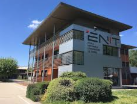
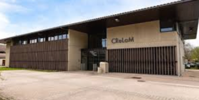

Remerciements
Je souhaite remercier Isabelle Bazet, qui m’a permis d’effectuer mon stage au sein de l’établissement.
Je remercie également mon tuteur de stage, Cédrick Beler, ainsi que le stagiaire Leonardo Zuniga, pour m’avoir accueilli, accompagné et transmis les bases du métier de chercheur et d’enseignant.
Présentation de l’UTTOP

UTTOP est la 4ème université de technologie en France qui a été créée en 2024. Elle contient l'ENIT(l'École Nationale d'Ingénieurs de Tarbes "qui porte sur les recherches mécaniques, industriels, ect" ) et l'IUT(Institu Universitaire de Technologie "qui porte sur l'industrie Civil, électrique, ect" ) NUTTeO est un projet de l'UTTOP qui vise à structurer un axe d'exellence en ingénierie et à renforcer les liens entre l'ENIT et l'IUT
ENIT
Site de UTTOP L'École National d'Ingenieurs de Tarbes Créée en 1963, l'ENIT forme des ingenieurs généraliste en génie mécanique et génie industriel. Cette formation dure 5 ans, répartis en 10 semestres, qui mène au Diplôme d'Ingénieur, qui équivaut à un master.
IUT
L'IUT comme pour l'ENIT est un établissement public rattaché à une université française. Cette établissement forme des étudiants à des métieers technique et profesionnels. Un IUT dure 3 ans et son but est de permetre aux personnes le faisant d'obtenir un bac +3, et/ou un BUT.
LGP – Laboratoire Génie de Production
LGP, Le laboratoire LGP ENIT est un laboratoire de recherche pluridisciplinaire. c'est à dire, de différentes discipline, tels que l'automatique, l'informatique, les matériaux, la mécanique et les sciences de la production. Qui regroupe deux départements ---Le DMM(Département Méchanique-Matériaux-Procédés) ------C'est le département qui regroupe les chercheurs et enseingnants-chercheurs qui travaillent sur des sujets liés à la mécanique, aux matériaux et aux procédés de fabrications. ---Le DSys(Département Systèmes) ------C'est le département orienté vers les systèmes tels que, des système automatisés, système de productions, robotique, ect. Pour mon stage j'ai suivi un enseingnant-chercheur(maître de conférence) qui fesait parti du Groupe de recherche ICE. ICE fait partie du Département Système de la LGP LGP 1. DMM 2. DSys -ICE (Ingénierie, Contrôle, Énergie) -DIDS (Décision & Interopérabilité pour la Dynamique des Systèmes) -SDC (Système Décisionnels et Cognitifs)
Activités réalisées
Mon Tuteur de stage Cédrick k BELER et son stagiaire Leonardo ZUNIGA travaillaient sur une application qui permetra aux personnes venant visiter l'établissement aux journées portes ouverte(JPO) de ne pas se perdre. Sur cette application qu'ils ont travaillés, j'ai aidé à faire des test avec leur GPS, avec Leonardo, dans les batiments qui vont être utilisé pendant ces journées, qui sont le vendredi 30 et samedi 31 janvier. J'ai aussi découvert le métier de chercheur(Cédrick est, je le rappelle, un enseingnant-chercheur). J'ai découvert, grâce a Leonardo et mon tuteur, Visual Studio Code(VS Code). Cette application permet d'utiliser un langage tel que "markdaw", que j'ai utilisé pour réaliser cet éxposé.
Ce stage m’a permis de découvrir le milieu de la recherche ainsi que l’utilisation d’outils informatiques tels que Visual Studio Code, le langage HTML et le Markdown.